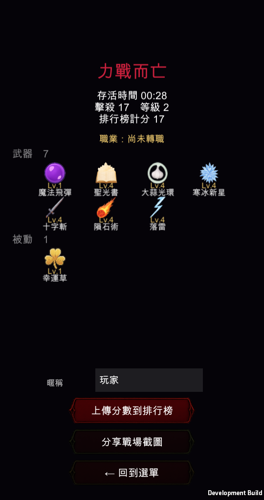

Vampire Revenge · 這一批
道具系統補上了，HUD 也照你說的重排
先回答你的兩個問題，再講改了什麼。
你的兩個問題
升級選項確實有限制，但跟轉職無關
原本設計HUD 重排
改完的樣子
已驗證

敵人「滑步」的原因
走路動畫的播放速度是拿「移動速度 ÷ 參考速度」算的，而那個參考速度寫死成玩家的基礎移速 200。敵人的移速在 40~150 之間（殭屍只有 46），除下來全部低於播放速度的下限 0.45——等於整場敵人都用 4.5fps 播 12 幀的循環，2.7 秒才走完一步。腳幾乎不動，人卻一直滑過來。
改成每個單位用自己的基礎速度當基準：正常追擊時就是 10fps，被冰凍減速時才會跟著慢下來。左右鏡像本來就有作用，不是鏡像的問題。
道具系統：量出來的結果
| 道具 | 效果 | 實測 |
|---|---|---|
| 烤雞 | 回復 30 生命 | HP 40 → 70 |
| 懷錶 | 敵人定格 5 秒 | 定格中敵人 1 秒位移 0.000 |
| 磁鐵 | 全場寶石吸附 | 最遠寶石 9.01 → 2.24 |
| 炸彈 | 畫面內敵人重擊 | 波及 8 隻，敵人 10 → 2 |
| 狂暴 | 傷害 ×1.5（8 秒） | 倍率 1.50 |
| 經驗×2 | 經驗加倍（10 秒） | 倍率 2.00 |
| 疾速 | 移速 ×1.3（8 秒） | 倍率 1.30 |
圖示先沿用既有的武器／被動圖（烤雞用紅心、懷錶用絕對零度、炸彈用隕石、狂暴用力量、疾速用靴子），語意對得上。要另外做一套專屬道具美術再跟我說。
第一次跑驗證時炸彈之後全部回 0，看起來像功能壞了——查下來是磁鐵一撿、寶石全湧進來就升級，遊戲暫停等玩家點選，而驗證流程沒處理升級選單。是測試方法的問題，不是功能問題。
其他一起改的
- 血月獵殺者放大：Size 40 → 78，跟最小的魔王同一個量級（接觸半徑只從 14 提到 20，畫得比判定大是安全的方向）。原本跟一般小怪差不多大，難怪看不出被追殺。
- 敵方彈幕會被樹幹擋下來。樹幹擋得住人也擋得住敵人，沒有理由讓箭穿過去。玩家的彈丸維持不擋——武器是自動瞄準的，玩家無法自己選角度，擋下來只會像攻擊莫名失效。要改成雙向都擋跟我說。
- 經驗寶石放大（U 9/14 → 14/20）、彈丸圖示放大（2.4 → 3.6 倍）。兩者的傷害判定都沒有跟著放大。
- 伯爵開場造型改用走路動畫第一幀，站著跟走路不再是兩個人。
結算畫面全部重做
你回報的四件事都改了
已驗證
順帶：那些 emoji 一直都是空白
結算標題的 🏆💀、按鈕上的 🌐📤、上傳結果的 ✅❌——介面字型沒有 emoji 字符，這些位置在手機上一直是空白。你截圖裡「力戰而亡」前面那塊空隙就是 💀。全部改成純文字，成功失敗改用顏色區分。
分享戰場截圖：確實漏掉了
你記得沒錯，Expo 版有這個功能（shared/shareResult.ts 的「分享戰場截圖」），移植到 Unity 時漏掉了。已經補上：截圖存成 PNG，再開系統的分享面板。Unity 沒有等價的內建功能，所以另外接了一層原生程式碼（跟 Game Center 那層同一種做法）。
Mac 上沒有系統分享面板，所以只驗到截圖那一段：檔案確實產生、140,364 bytes。分享面板本身要到你手機上才看得到。
精通文字重疊
精通的名字都叫「奧義：○○精通」，七個字擺進 210 寬的格子一定滿出來，相鄰兩格就疊在一起。區塊標題已經寫著「精通」，前綴是純重複，拿掉；同時把名稱改成允許折行、放不下自動縮字級，之後就算加更長的名字也不會再疊。
還沒做的（排隊中）
- 神秘商人的動畫——目前太融入背景。
- 每隻魔王專屬的衝鋒預告動畫——這個要走生成流程，會先估成本、先出試樣給你看。
- 夜巫的走路素材是壞的（下面單獨說明）。
順帶發現：夜巫的走路素材沒去背
要花錢才能修iOS 專案已重新匯出
上面所有改動都在裡面，Xcode 直接 build 就好。